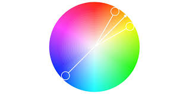

RGB (Rood, Groen, Blauw):
RGB is een veelgebruikt kleurmodel in digitale beeldverwerking en wordt voornamelijk gebruikt voor weergave op schermen, zoals computermonitors, televisies en smartphones. Het is een additief kleurmodel, wat betekent dat kleuren worden gecreëerd door verschillende hoeveelheden van de primaire kleuren rood, groen en blauw te combineren. Wanneer deze kleuren met verschillende intensiteiten worden gemengd, ontstaan er miljoenen verschillende kleuren. Als bijvoorbeeld rood en groen met maximale intensiteit worden gemengd, ontstaat de kleur geel. Dit kleurmodel wordt vaak gebruikt voor digitale kunst, fotografie en webontwerp.
CMYK (Cyaan, Magenta, Geel, Zwart):
CMYK is een subtractief kleurmodel dat voornamelijk wordt gebruikt voor drukwerk, zoals tijdschriften, brochures en verpakkingen. In dit model worden kleuren gecreëerd door cyaan, magenta, geel en zwart (de zogenaamde Key, vandaar de 'K') pigmenten te combineren. CMYK werkt op een andere manier dan RGB omdat het pigmenten absorbeert in plaats van licht uitstraalt. Wanneer cyaan, magenta en geel op een witte achtergrond worden gemengd, ontstaat een breed scala aan kleuren. Zwart wordt toegevoegd om diepe schaduwen en donkere tinten te creëren. Dit kleurmodel is essentieel voor nauwkeurige kleurweergave in drukwerk.
Pixels:
Een pixel is de kleinste eenheid van een digitale afbeelding. Het woord "pixel" is afgeleid van "picture element". Pixels zijn minuscule punten die samen een afbeelding vormen op een scherm of afdruk. Elke pixel heeft een specifieke kleurwaarde volgens het gebruikte kleurmodel, bijvoorbeeld RGB of CMYK. De kleurinformatie van elke pixel wordt opgeslagen in digitale beeldbestanden. Hoe meer pixels een afbeelding bevat, hoe gedetailleerder en scherper deze is.
Resolutie:
Resolutie verwijst naar het aantal pixels dat een digitale afbeelding bevat en wordt gemeten in pixels per inch (PPI) of dots per inch (DPI). Een hogere resolutie betekent dat er meer pixels per inch zijn, wat resulteert in een scherpere en gedetailleerdere afbeelding. Lagere resoluties worden vaak gebruikt voor webafbeeldingen, waar 72 PPI gebruikelijk is. Hogere resoluties, zoals 300 DPI of meer, zijn nodig voor afdrukken om een goede afdrukkwaliteit te garanderen. Een hogere resolutie zorgt ervoor dat elk detail in een afbeelding helder en scherp wordt weergegeven.
versie 1.8 